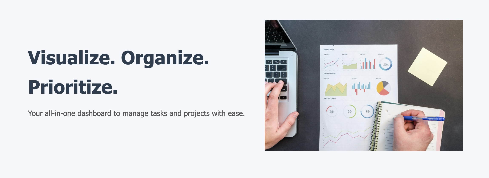

An interactive, Trello-style app to organize tasks, track priorities, and boost productivity.

📌 Overview
TaskFlow is a powerful and responsive project management tool that allows users to register, log in, and manage their tasks with ease. From color-coded priorities to drag-and-drop task organization, it provides a smooth and intuitive experience for managing to-dos and projects.
✅ Features
✔ User Registration and Login with localStorage token validation
✔ Personalized dashboard greeting by first name
✔ Add, edit, and delete tasks
✔ Drag-and-drop task reordering across boards
✔ Task priority indicators (High, Medium, Low)
✔ Due date awareness with real-time color warnings
✔ Persisted data using localStorage
🚀 Future Enhancements
🔹 Subtask support and checklist functionality
🔹 Backend integration for cross-device syncing
🔹 Dark/light mode toggle
🔹 Team collaboration & invite system
🛠️ Technologies Used
HTML | CSS | Bootstrap | JavaScript | Local Storage
🔧 Dedicated Technology Breakdown
📌 HTML5 – Structured layout and form design
📌 CSS3 – Custom styling for clean UI
📌 Bootstrap – Responsive grid, components, and buttons
📌 JavaScript – Functional logic for user interactions, drag-drop, and validation